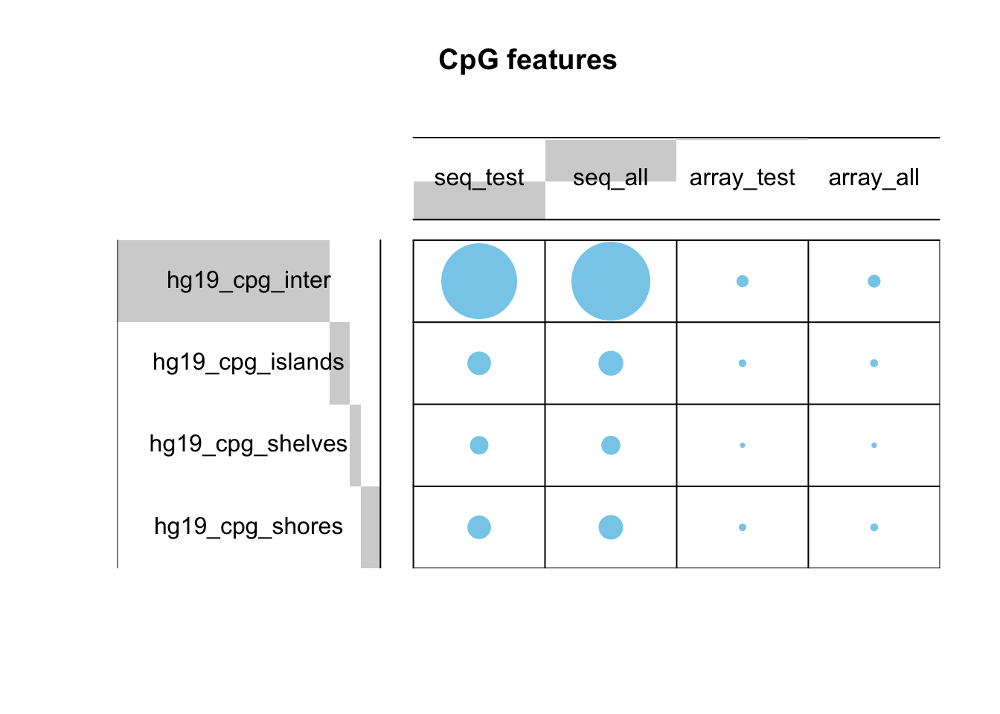
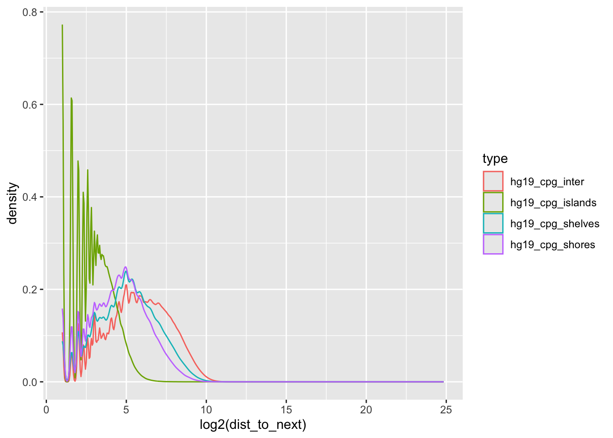

02_cpgAvailVsTested
Caitlin Page
2025-03-04
Last updated: 2025-04-29
Checks: 7 0
Knit directory: 2_ontology_bias/analysis/
This reproducible R Markdown analysis was created with workflowr (version 1.7.1). The Checks tab describes the reproducibility checks that were applied when the results were created. The Past versions tab lists the development history.
Great! Since the R Markdown file has been committed to the Git repository, you know the exact version of the code that produced these results.
Great job! The global environment was empty. Objects defined in the global environment can affect the analysis in your R Markdown file in unknown ways. For reproduciblity it’s best to always run the code in an empty environment.
The command set.seed(20240905) was run prior to running
the code in the R Markdown file. Setting a seed ensures that any results
that rely on randomness, e.g. subsampling or permutations, are
reproducible.
Great job! Recording the operating system, R version, and package versions is critical for reproducibility.
Nice! There were no cached chunks for this analysis, so you can be confident that you successfully produced the results during this run.
Great job! Using relative paths to the files within your workflowr project makes it easier to run your code on other machines.
Great! You are using Git for version control. Tracking code development and connecting the code version to the results is critical for reproducibility.
The results in this page were generated with repository version ee50eb6. See the Past versions tab to see a history of the changes made to the R Markdown and HTML files.
Note that you need to be careful to ensure that all relevant files for
the analysis have been committed to Git prior to generating the results
(you can use wflow_publish or
wflow_git_commit). workflowr only checks the R Markdown
file, but you know if there are other scripts or data files that it
depends on. Below is the status of the Git repository when the results
were generated:
Ignored files:
Ignored: .DS_Store
Ignored: .Rhistory
Ignored: .Rproj.user/
Ignored: analysis/.DS_Store
Ignored: analysis/figure/
Ignored: analysis/input/
Ignored: analysis/mc_h1/
Ignored: analysis/myEnvironment.RData
Ignored: data/cell_line_wgbs/
Ignored: data/gene_sets/
Ignored: data/long_read/
Ignored: data/microarray/
Ignored: data/wgbs/
Ignored: data/wgbs_2/
Ignored: output/figures/
Ignored: renv/library/
Ignored: renv/staging/
Untracked files:
Untracked: analysis/clusterlog.txt
Untracked: code/ChatGPT_translate.html
Untracked: code/ChatGPT_translate_files/
Untracked: code/background.R
Unstaged changes:
Modified: .gitignore
Modified: 2_ontology_bias.Rproj
Modified: _workflowr.yml
Modified: analysis/00_datasets.Rmd
Modified: analysis/03_genesToGST.Rmd
Modified: renv.lock
Modified: renv/.gitignore
Modified: renv/activate.R
Modified: renv/settings.json
Note that any generated files, e.g. HTML, png, CSS, etc., are not included in this status report because it is ok for generated content to have uncommitted changes.
These are the previous versions of the repository in which changes were
made to the R Markdown (analysis/02_cpgAvailVsTested.Rmd)
and HTML (docs/02_cpgAvailVsTested.html) files. If you’ve
configured a remote Git repository (see ?wflow_git_remote),
click on the hyperlinks in the table below to view the files as they
were in that past version.
| File | Version | Author | Date | Message |
|---|---|---|---|---|
| Rmd | ee50eb6 | Caitlin Page | 2025-04-29 | move code over so can keep it but not figure it out - it’s the annotatr stuff that was comp intense and not very insightful anyway |
| Rmd | 22296d6 | Caitlin Page | 2025-04-01 | tidying up code - cpg island and distance stuff |
| Rmd | ceabd71 | Caitlin Page | 2025-03-31 | code copied from explore cpg distrib |
| Rmd | 44d73b6 | Caitlin Page | 2025-03-17 | commit |
Introduction
Not all of the available CpGs will be utilised in the DM testing procedure - some will be filtered out because they have no/low counts.
Wijesooria et al., 2022 highlights the importance of using a correct background gene set in regards to gene set testing analysis. This means using the only the genes that were testing in the differential analysis, as opposed to all possible genes.
This will be relevant to us in both the genes input as the background - making sure that they are only included if they contain CpGs that were tested, and in the bias correction - making sure that only CpGs used in the differential testing are provided as the bias.
In my early analysis, I did not realise this was an important feature, and had been getting my bias (number of CpGs) by merely overlapping the CpGs to a gene. Here, I wish to do some analysis to understand how using only the tested CpGs changes the results, and the relationships between them all.
Packages
library(plyranges)Loading required package: BiocGenerics
Attaching package: 'BiocGenerics'The following objects are masked from 'package:stats':
IQR, mad, sd, var, xtabsThe following objects are masked from 'package:base':
anyDuplicated, aperm, append, as.data.frame, basename, cbind,
colnames, dirname, do.call, duplicated, eval, evalq, Filter, Find,
get, grep, grepl, intersect, is.unsorted, lapply, Map, mapply,
match, mget, order, paste, pmax, pmax.int, pmin, pmin.int,
Position, rank, rbind, Reduce, rownames, sapply, setdiff, table,
tapply, union, unique, unsplit, which.max, which.minLoading required package: IRangesLoading required package: S4VectorsLoading required package: stats4
Attaching package: 'S4Vectors'The following object is masked from 'package:utils':
findMatchesThe following objects are masked from 'package:base':
expand.grid, I, unnameLoading required package: GenomicRangesLoading required package: GenomeInfoDb
Attaching package: 'plyranges'The following object is masked from 'package:IRanges':
sliceThe following object is masked from 'package:stats':
filterlibrary(dplyr)
Attaching package: 'dplyr'The following objects are masked from 'package:plyranges':
between, n, n_distinctThe following objects are masked from 'package:GenomicRanges':
intersect, setdiff, unionThe following object is masked from 'package:GenomeInfoDb':
intersectThe following objects are masked from 'package:IRanges':
collapse, desc, intersect, setdiff, slice, unionThe following objects are masked from 'package:S4Vectors':
first, intersect, rename, setdiff, setequal, unionThe following objects are masked from 'package:BiocGenerics':
combine, intersect, setdiff, unionThe following objects are masked from 'package:stats':
filter, lagThe following objects are masked from 'package:base':
intersect, setdiff, setequal, unionlibrary(ggplot2)
library(BSDA)Loading required package: lattice
Attaching package: 'BSDA'The following object is masked from 'package:datasets':
Orangelibrary(ggVennDiagram)
library(gplots)
Attaching package: 'gplots'The following object is masked from 'package:IRanges':
spaceThe following object is masked from 'package:S4Vectors':
spaceThe following object is masked from 'package:stats':
lowesslibrary(IlluminaHumanMethylationEPICanno.ilm10b4.hg19)Loading required package: minfiLoading required package: SummarizedExperimentLoading required package: MatrixGenericsLoading required package: matrixStats
Attaching package: 'matrixStats'The following object is masked from 'package:dplyr':
count
Attaching package: 'MatrixGenerics'The following objects are masked from 'package:matrixStats':
colAlls, colAnyNAs, colAnys, colAvgsPerRowSet, colCollapse,
colCounts, colCummaxs, colCummins, colCumprods, colCumsums,
colDiffs, colIQRDiffs, colIQRs, colLogSumExps, colMadDiffs,
colMads, colMaxs, colMeans2, colMedians, colMins, colOrderStats,
colProds, colQuantiles, colRanges, colRanks, colSdDiffs, colSds,
colSums2, colTabulates, colVarDiffs, colVars, colWeightedMads,
colWeightedMeans, colWeightedMedians, colWeightedSds,
colWeightedVars, rowAlls, rowAnyNAs, rowAnys, rowAvgsPerColSet,
rowCollapse, rowCounts, rowCummaxs, rowCummins, rowCumprods,
rowCumsums, rowDiffs, rowIQRDiffs, rowIQRs, rowLogSumExps,
rowMadDiffs, rowMads, rowMaxs, rowMeans2, rowMedians, rowMins,
rowOrderStats, rowProds, rowQuantiles, rowRanges, rowRanks,
rowSdDiffs, rowSds, rowSums2, rowTabulates, rowVarDiffs, rowVars,
rowWeightedMads, rowWeightedMeans, rowWeightedMedians,
rowWeightedSds, rowWeightedVarsLoading required package: BiobaseWelcome to Bioconductor
Vignettes contain introductory material; view with
'browseVignettes()'. To cite Bioconductor, see
'citation("Biobase")', and for packages 'citation("pkgname")'.
Attaching package: 'Biobase'The following object is masked from 'package:MatrixGenerics':
rowMediansThe following objects are masked from 'package:matrixStats':
anyMissing, rowMediansLoading required package: BiostringsLoading required package: XVector
Attaching package: 'Biostrings'The following object is masked from 'package:base':
strsplitLoading required package: bumphunterLoading required package: foreachLoading required package: iteratorsLoading required package: parallelLoading required package: locfitlocfit 1.5-9.11 2025-01-27Setting options('download.file.method.GEOquery'='auto')Setting options('GEOquery.inmemory.gpl'=FALSE)library(IlluminaHumanMethylationEPICmanifest)
library(annotatr)Pre-processed files
wgbs_counts <- readRDS("../output/wgbs_counts.rds")
anno_array <- getAnnotation(IlluminaHumanMethylationEPICanno.ilm10b4.hg19)
anno_array <- anno_array %>% data.frame() %>%
mutate(seqnames = chr, start = pos, width = 1,
position = paste0(chr, "-", pos)) %>% relocate(c(seqnames, start, width))
DMPs <- readRDS("../output/array_dmps.rds")
DMPs$pos <- paste0(DMPs$seqnames, "-", DMPs$start)
dmrcate_array_anno <- readRDS("../output/dmrcate_array_anno.rds")
dmrcate_array_anno <- dmrcate_array_anno@ranges %>% data.frame() %>%
mutate(pos = paste0(seqnames, "-", start))
dmrcate_array_anno <- dmrcate_array_anno %>%
mutate(cg_id = anno_array[match(.$pos, anno_array$position), "Name"])
bsseq_res <- readRDS("../output/bsseq_res.rds")
dmrcate_seq_anno <- readRDS("../output/dmrcate_seq_anno.rds")
dmrcate_seq_anno <- dmrcate_seq_anno@ranges %>% data.frame() %>%
mutate(pos = paste0(seqnames, "-", start))
biomart_genes <- readRDS("../output/genes_biomart.rds")overlap
- Seq
list_venn <- list(seq = wgbs_counts$pos,
bsseq = bsseq_res$position,
dmrcate = dmrcate_seq_anno$pos)
ggVennDiagram(list_venn)- array
list_venn <- list(seq = anno_array$position,
minfi = DMPs$pos,
dmrcate = dmrcate_array_anno$pos)
ggVennDiagram(list_venn)Compare distance between tested sites
Q: Are there significant differences (on average) for the distance between sites depending on if they were tested or not?
dmrcate_seq_anno <- dmrcate_seq_anno %>% .[order(.$seqnames, .$start),] %>%
group_by(seqnames) %>% mutate(dist_to_next = lead(start) - start) %>% ungroup()
bsseq_res <- bsseq_res %>% .[order(.$seqnames, .$start),] %>%
group_by(seqnames) %>% mutate(dist_to_next = lead(start) - start) %>% ungroup()
dmrcate_array_anno <- dmrcate_array_anno %>% .[order(.$seqnames, .$start),] %>%
group_by(seqnames) %>% mutate(dist_to_next = lead(start) - start) %>% ungroup()
DMPs <- DMPs %>% .[order(.$seqnames, .$start),] %>%
group_by(seqnames) %>% mutate(dist_to_next = lead(start) - start) %>% ungroup()WGBS
dmrcate_seq_anno %>%
ggplot(aes(x = log2(dist_to_next), colour = seqnames)) +
geom_density()Warning: Removed 22 rows containing non-finite outside the scale range
(`stat_density()`).dmrcate_seq_anno %>%
ggplot(aes(y = log2(dist_to_next), x = seqnames, colour = seqnames)) +
geom_boxplot() +
theme(legend.position = "none")Warning: Removed 22 rows containing non-finite outside the scale range
(`stat_boxplot()`).bsseq_res %>%
ggplot(aes(x = log2(dist_to_next), colour = seqnames)) +
geom_density()Warning: Removed 22 rows containing non-finite outside the scale range
(`stat_density()`).bsseq_res %>%
ggplot(aes(y = log2(dist_to_next), x = seqnames, colour = seqnames)) +
geom_boxplot() +
theme(legend.position = "none")Warning: Removed 22 rows containing non-finite outside the scale range
(`stat_boxplot()`).t.test(dmrcate_seq_anno$dist_to_next, bsseq_res$dist_to_next)
Welch Two Sample t-test
data: dmrcate_seq_anno$dist_to_next and bsseq_res$dist_to_next
t = 0.3428, df = 52133047, p-value = 0.7318
alternative hypothesis: true difference in means is not equal to 0
95 percent confidence interval:
-2.829982 4.029744
sample estimates:
mean of x mean of y
107.5599 106.9600 compare all sites to tested sites
wgbs_counts <- wgbs_counts %>% group_by(seqnames) %>% mutate(dist_to_next = lead(start) - start) %>% ungroup()
c(mean = mean(wgbs_counts$dist_to_next, na.rm=TRUE), sd = sd(wgbs_counts$dist_to_next, na.rm=TRUE)) mean sd
106.6961 8330.1619 z.test(dmrcate_seq_anno$dist_to_next, mu=mean(wgbs_counts$dist_to_next, na.rm=TRUE), sigma.x = sd(wgbs_counts$dist_to_next, na.rm=TRUE))
One-sample z-Test
data: dmrcate_seq_anno$dist_to_next
z = 0.52869, p-value = 0.597
alternative hypothesis: true mean is not equal to 106.6961
95 percent confidence interval:
104.3577 110.7621
sample estimates:
mean of x
107.5599 - do not reject null
- basically the tested sites are not a distinct group in terms of the distance between them
array
dmrcate_array_anno %>%
ggplot(aes(x = log2(dist_to_next), colour = seqnames)) +
geom_density()Warning: Removed 22 rows containing non-finite outside the scale range
(`stat_density()`).
dmrcate_array_anno %>%
ggplot(aes(y = log2(dist_to_next), x = seqnames, colour = seqnames)) +
geom_boxplot() +
theme(legend.position = "none")Warning: Removed 22 rows containing non-finite outside the scale range
(`stat_boxplot()`).DMPs %>%
ggplot(aes(x = log2(dist_to_next), colour = seqnames)) +
geom_density()Warning: Removed 22 rows containing non-finite outside the scale range
(`stat_density()`).DMPs %>%
ggplot(aes(y = log2(dist_to_next), x = seqnames, colour = seqnames)) +
geom_boxplot() +
theme(legend.position = "none")Warning: Removed 22 rows containing non-finite outside the scale range
(`stat_boxplot()`).t.test(dmrcate_array_anno$dist_to_next, DMPs$dist_to_next)
Welch Two Sample t-test
data: dmrcate_array_anno$dist_to_next and DMPs$dist_to_next
t = 0.27304, df = 1549461, p-value = 0.7848
alternative hypothesis: true difference in means is not equal to 0
95 percent confidence interval:
-107.4208 142.1947
sample estimates:
mean of x mean of y
3612.478 3595.091 - 2 groups are not distinct as expected
Compare tested and all
anno_array <- anno_array %>% .[order(.$seqnames, .$start),] %>%
group_by(seqnames) %>% mutate(dist_to_next = lead(start) - start) %>% ungroup()
c(mean = mean(anno_array$dist_to_next, na.rm = TRUE), sd = sd(anno_array$dist_to_next, na.rm = TRUE)) mean sd
3467.239 49569.982 z.test(dmrcate_array_anno$dist_to_next, mu = mean(anno_array$dist_to_next, na.rm = TRUE), sigma.x = sd(anno_array$dist_to_next, na.rm = TRUE))
One-sample z-Test
data: dmrcate_array_anno$dist_to_next
z = 2.5759, p-value = 0.009998
alternative hypothesis: true mean is not equal to 3467.239
95 percent confidence interval:
3501.967 3722.988
sample estimates:
mean of x
3612.478 - in the array, tested sites are a significant separate group to overall in regards to the distance between the sites
Compare array and seq
t.test(dmrcate_seq_anno$dist_to_next[!is.na(dmrcate_seq_anno$dist_to_next)], dmrcate_array_anno$dist_to_next[!is.na(dmrcate_array_anno$dist_to_next)])
Welch Two Sample t-test
data: dmrcate_seq_anno$dist_to_next[!is.na(dmrcate_seq_anno$dist_to_next)] and dmrcate_array_anno$dist_to_next[!is.na(dmrcate_array_anno$dist_to_next)]
t = -77.616, df = 774073, p-value < 2.2e-16
alternative hypothesis: true difference in means is not equal to 0
95 percent confidence interval:
-3593.424 -3416.412
sample estimates:
mean of x mean of y
107.5599 3612.4779 - 2 groups are significantly different
- sequencing has much smaller gaps between tested CpGs
Distribution of tested CpGs among CpG annotations - islands etc
array
- relationship to CpG annotation is included in the EPIC annotation file/package
anno_array <- data.frame(anno_array)
head(anno_array) seqnames start width chr pos strand Name AddressA AddressB
1 chr1 10525 1 chr1 10525 + cg14817997 21611527
2 chr1 10848 1 chr1 10848 - cg26928153 91693541 47784201
3 chr1 10850 1 chr1 10850 - cg16269199 82663207 3701821
4 chr1 15865 1 chr1 15865 + cg13869341 2665852 39757192
5 chr1 18827 1 chr1 18827 + cg14008030 84794291
6 chr1 29407 1 chr1 29407 + cg12045430 77731415 4799528
ProbeSeqA
1 AAACRAAACTACRTTATCCTCTACACAAATTTCRATAATACTCTAAAAAC
2 ACACATACTAACACATCAAAATAAAAACATAACACAAACACAAAAAAACA
3 ACATACTAACACATCAAAATAAAAACATAACACAAACACAAAAAAACACA
4 CCAATAACTAACCACTCTACTAAAATCCATCCACCAAACTAAAAACATCA
5 ACTCRAAATTTACTCAATAAACCRTTCAATATATACAAAAACAATTCCCC
6 AAAAAAAACACAATAAAAAACAAACAACAACATTAAAACCCAAAAACACA
ProbeSeqB Type NextBase Color
1 II
2 ACACATACTAACGCGTCGAAATAAAAACGTAACGCAAACGCAAAAAAACG I C Grn
3 ACATACTAACGCGTCGAAATAAAAACGTAACGCAAACGCAAAAAAACGCG I C Grn
4 CCGATAACTAACCACTCTACTAAAATCCATCCGCCAAACTAAAAACATCG I A Red
5 II
6 GAAAAAAACGCAATAAAAAACGAACGACGACGTTAAAACCCGAAAACGCG I A Red
Probe_rs Probe_maf CpG_rs CpG_maf SBE_rs SBE_maf Islands_Name
1 <NA> NA <NA> NA <NA> NA
2 <NA> NA <NA> NA <NA> NA
3 <NA> NA <NA> NA <NA> NA
4 <NA> NA <NA> NA <NA> NA
5 <NA> NA <NA> NA <NA> NA
6 <NA> NA <NA> NA <NA> NA chr1:28735-29810
Relation_to_Island
1 OpenSea
2 OpenSea
3 OpenSea
4 OpenSea
5 OpenSea
6 Island
Forward_Sequence
1 CCCTCGCGGTACCCTCAGCCGGCCCGCCCGCCCGGGTCTGACCTGAGGAGAACTGTGCTC[CG]CCTTCAGAGTACCACCGAAATCTGTGCAGAGGACAACGCAGCTCCGCCCTCGCGGTGCTC
2 GCGCAGGCGCAGACACATGCTAGCGCGTCGGGGTGGAGGCGTGGCGCAGGCGCAGAGAGG[CG]CGCCGCGCCGGCGCAGGCGCAGAGACACATGCTACCGCGTCCAGGGGTGGAGGCGTGGCG
3 GCAGGCGCAGACACATGCTAGCGCGTCGGGGTGGAGGCGTGGCGCAGGCGCAGAGAGGCG[CG]CCGCGCCGGCGCAGGCGCAGAGACACATGCTACCGCGTCCAGGGGTGGAGGCGTGGCGCA
4 GCTCCTTCTGCTGCTGCTTCTCCAGCTTTCGCTCCTTCATGCTGCGCAGCTTGGCCTTGC[CG]ATGCCCCCAGCTTGGCGGATGGACTCTAGCAGAGTGGCCAGCCACCGGAGGGGTCAACCA
5 ACGGAGACCGGAGGCTGAGACTGGCAAGGCTGGACCTGAGTGTCGTCACCTAAATTCAGA[CG]GGGAACTGCCCCTGCACATACTGAACGGCTCACTGAGCAAACCCCGAGTCCCGACCACCG
6 CGCCGCCGCTTCCGCTCTGCCGGAGCCGCTGGGTCCTAGCCCCGCCGCCCCCAGTCCGCC[CG]CGCCTCCGGGTCCTAACGCCGCCGCTCGCCCTCCACTGCGCCCTCCCCGAGCGCGGCTCC
SourceSeq UCSC_RefGene_Name
1 CGCCTTCAGAGTACCACCGAAATCTGTGCAGAGGACAACGCAGCTCCGCC DDX11L1
2 ACACATGCTAGCGCGTCGGGGTGGAGGCGTGGCGCAGGCGCAGAGAGGCG DDX11L1
3 ACATGCTAGCGCGTCGGGGTGGAGGCGTGGCGCAGGCGCAGAGAGGCGCG DDX11L1
4 CCGGTGGCTGGCCACTCTGCTAGAGTCCATCCGCCAAGCTGGGGGCATCG WASH5P
5 CGGGGAACTGCCCCTGCACATACTGAACGGCTCACTGAGCAAACCCCGAG WASH5P
6 GGGGAGGGCGCAGTGGAGGGCGAGCGGCGGCGTTAGGACCCGGAGGCGCG WASH5P
UCSC_RefGene_Accession UCSC_RefGene_Group Phantom4_Enhancers
1 NR_046018 TSS1500
2 NR_046018 TSS1500
3 NR_046018 TSS1500
4 NR_024540 Body
5 NR_024540 Body
6 NR_024540 TSS200
Phantom5_Enhancers DMR X450k_Enhancer HMM_Island Regulatory_Feature_Name
1 1:484-1103
2 1:484-1103
3 1:484-1103
4
5
6 1:18599-19663
Regulatory_Feature_Group GencodeBasicV12_NAME
1 DDX11L1
2 DDX11L1
3 DDX11L1
4
5
6 MIR1302-11;MIR1302-11;MIR1302-11
GencodeBasicV12_Accession GencodeBasicV12_Group
1 ENST00000456328.2 TSS1500
2 ENST00000456328.2 TSS1500
3 ENST00000456328.2 TSS1500
4
5
6 ENST00000469289.1;ENST00000408384.1;ENST00000473358.1 TSS1500;TSS1500;TSS200
GencodeCompV12_NAME
1 DDX11L1
2 DDX11L1
3 DDX11L1
4
5
6 MIR1302-11;MIR1302-11;MIR1302-11
GencodeCompV12_Accession GencodeCompV12_Group
1 ENST00000456328.2 TSS1500
2 ENST00000456328.2 TSS1500
3 ENST00000456328.2 TSS1500
4
5
6 ENST00000469289.1;ENST00000408384.1;ENST00000473358.1 TSS1500;TSS1500;TSS200
DNase_Hypersensitivity_NAME DNase_Hypersensitivity_Evidence_Count
1 chr1:10345-10590 3
2
3
4
5
6
OpenChromatin_NAME OpenChromatin_Evidence_Count TFBS_NAME TFBS_Evidence_Count
1
2
3
4
5
6
Methyl27_Loci Methyl450_Loci Random_Loci position dist_to_next
1 chr1-10525 323
2 chr1-10848 2
3 chr1-10850 5015
4 TRUE chr1-15865 2962
5 TRUE chr1-18827 10580
6 TRUE chr1-29407 18dmrcate_array_anno <- data.frame(dmrcate_array_anno)
dmrcate_array_anno$cpg_feature <- anno_array[match(dmrcate_array_anno$cg_id, anno_array$Name), "Relation_to_Island"]dmrcate_array_anno %>% group_by(cpg_feature) %>% summarise(n=n()) %>% ungroup() %>% mutate(total = sum(n), prop = n/sum(n))# A tibble: 6 × 4
cpg_feature n total prop
<chr> <int> <int> <dbl>
1 Island 146893 772927 0.190
2 N_Shelf 27662 772927 0.0358
3 N_Shore 75452 772927 0.0976
4 OpenSea 432880 772927 0.560
5 S_Shelf 25645 772927 0.0332
6 S_Shore 64395 772927 0.0833dmrcate_array_anno %>%
ggplot(aes(x = cpg_feature, fill = cpg_feature)) +
geom_bar() +
theme(legend.position = "none")* so far I’ve just been comparing array and seq * not diff between tested and non tested * i still think some kind of chi-square - because I want to compare how the proportions change/distributions change * dist to next would be a z test I think - because the tested is a subgroup of the all
dt <- cbind(dmrcate_array_anno %>% group_by(cpg_feature) %>% summarise(tested_n=n()),
all_n = anno_array %>% group_by(Relation_to_Island) %>% summarise(all_n=n()) %>% .$all_n)
rownames(dt) <- dt$cpg_feature
dt <- dt[,2:3]
dt tested_n all_n
Island 146893 161441
N_Shelf 27662 31991
N_Shore 75452 83364
OpenSea 432880 488181
S_Shelf 25645 29700
S_Shore 64395 71182balloonplot(t(as.table(as.matrix(dt))),
main = "Array CpG features", xlab = "", ylab = "", label = FALSE, show.margins = FALSE)* frequencies appear to be very similar
sequencing
anno_cpg <- build_annotations(genome="hg19", annotations = "hg19_cpgs")Building CpG islands...loading from cacheBuilding CpG shores...Building CpG shelves...Building inter-CpG-islands...anno_cpg <- anno_cpg %>% data.frame()
overlap_feature <- find_overlaps(as_granges(wgbs_counts), as_granges(anno_cpg)) %>% data.frame()
dmrcate_seq_anno <- find_overlaps(as_granges(dmrcate_seq_anno), as_granges(anno_cpg)) %>% data.frame()dt <- cbind(dmrcate_seq_anno %>% group_by(type) %>% summarise(tested_n=n()),
all_n = overlap_feature %>% group_by(type) %>% summarise(all_n=n()) %>% .$all_n)
rownames(dt) <- dt$type
dt <- dt[,2:3]
dt tested_n all_n
hg19_cpg_inter 21148264 22921402
hg19_cpg_islands 1874061 2089538
hg19_cpg_shelves 1108798 1185270
hg19_cpg_shores 1864589 2022366balloonplot(t(as.table(as.matrix(dt))),
main = "Seq CpG features", xlab = "", ylab = "", label = FALSE, show.margins = FALSE)* similar frequencies
Seq and Array
- For Array, OpenSea is Inter, and combine N and S shelves and shores
dt <- cbind(dmrcate_array_anno %>% group_by(cpg_feature) %>% summarise(array_test=n()),
array_all = anno_array %>% group_by(Relation_to_Island) %>% summarise(all_n=n()) %>% .$all_n)
dt <- rbind(dt, c(cpg_feature = "shelf", array_test = dt[2,2] + dt[5,2], array_all = dt[2,3] + dt[5,3]),
c(cpg_feature = "shore", array_test = dt[3,2] + dt[6,2], array_all = dt[3,3] + dt[6,3])) %>% .[c(4,1,7,8),]
rownames(dt) <- NULL
dt <- cbind(cbind(dmrcate_seq_anno %>% group_by(type) %>% summarise(seq_test=n()),
seq_all = overlap_feature %>% group_by(type) %>% summarise(all_n=n()) %>% .$all_n), dt)
rownames(dt) <- dt$type
dt <- dt[,c(2,3,5,6)]
dt seq_test seq_all array_test array_all
hg19_cpg_inter 21148264 22921402 432880 488181
hg19_cpg_islands 1874061 2089538 146893 161441
hg19_cpg_shelves 1108798 1185270 53307 61691
hg19_cpg_shores 1864589 2022366 139847 154546balloonplot(t(as.table(as.matrix(dt))),
main = "CpG features", xlab = "", ylab = "", label = FALSE, show.margins = FALSE)
dmrcate_array_anno %>%
ggplot(aes(x = log2(dist_to_next), colour = cpg_feature)) +
geom_density()Warning: Removed 22 rows containing non-finite outside the scale range
(`stat_density()`).anno_array %>%
ggplot(aes(x = log2(dist_to_next), colour = Relation_to_Island)) +
geom_density()Warning: Removed 24 rows containing non-finite outside the scale range
(`stat_density()`).dmrcate_seq_anno %>%
ggplot(aes(x = log2(dist_to_next), colour = type)) +
geom_density()Warning: Removed 22 rows containing non-finite outside the scale range
(`stat_density()`).overlap_feature %>%
ggplot(aes(x = log2(dist_to_next), colour = type)) +
geom_density()Warning: Removed 25 rows containing non-finite outside the scale range
(`stat_density()`). * CpGs in islands have a shorter distance between them
sessionInfo()R version 4.4.2 (2024-10-31)
Platform: aarch64-apple-darwin20
Running under: macOS Sequoia 15.2
Matrix products: default
BLAS: /Library/Frameworks/R.framework/Versions/4.4-arm64/Resources/lib/libRblas.0.dylib
LAPACK: /Library/Frameworks/R.framework/Versions/4.4-arm64/Resources/lib/libRlapack.dylib; LAPACK version 3.12.0
locale:
[1] en_US.UTF-8/en_US.UTF-8/en_US.UTF-8/C/en_US.UTF-8/en_US.UTF-8
time zone: Australia/Melbourne
tzcode source: internal
attached base packages:
[1] parallel stats4 stats graphics grDevices utils datasets
[8] methods base
other attached packages:
[1] annotatr_1.30.0
[2] IlluminaHumanMethylationEPICmanifest_0.3.0
[3] IlluminaHumanMethylationEPICanno.ilm10b4.hg19_0.6.0
[4] minfi_1.50.0
[5] bumphunter_1.46.0
[6] locfit_1.5-9.11
[7] iterators_1.0.14
[8] foreach_1.5.2
[9] Biostrings_2.72.1
[10] XVector_0.44.0
[11] SummarizedExperiment_1.34.0
[12] Biobase_2.64.0
[13] MatrixGenerics_1.16.0
[14] matrixStats_1.5.0
[15] gplots_3.2.0
[16] ggVennDiagram_1.5.2
[17] BSDA_1.2.2
[18] lattice_0.22-6
[19] ggplot2_3.5.1
[20] dplyr_1.1.4
[21] plyranges_1.24.0
[22] GenomicRanges_1.56.2
[23] GenomeInfoDb_1.40.1
[24] IRanges_2.38.1
[25] S4Vectors_0.42.1
[26] BiocGenerics_0.50.0
loaded via a namespace (and not attached):
[1] splines_4.4.2 later_1.4.1
[3] BiocIO_1.14.0 bitops_1.0-9
[5] filelock_1.0.3 tibble_3.2.1
[7] preprocessCore_1.66.0 XML_3.99-0.18
[9] lifecycle_1.0.4 rprojroot_2.0.4
[11] MASS_7.3-61 base64_2.0.2
[13] scrime_1.3.5 magrittr_2.0.3
[15] limma_3.60.6 sass_0.4.9
[17] rmarkdown_2.29 jquerylib_0.1.4
[19] yaml_2.3.10 httpuv_1.6.15
[21] doRNG_1.8.6.1 askpass_1.2.1
[23] DBI_1.2.3 RColorBrewer_1.1-3
[25] abind_1.4-8 zlibbioc_1.50.0
[27] quadprog_1.5-8 purrr_1.0.4
[29] RCurl_1.98-1.16 rappdirs_0.3.3
[31] git2r_0.35.0 GenomeInfoDbData_1.2.12
[33] genefilter_1.86.0 annotate_1.82.0
[35] DelayedMatrixStats_1.26.0 codetools_0.2-20
[37] DelayedArray_0.30.1 xml2_1.3.6
[39] tidyselect_1.2.1 farver_2.1.2
[41] UCSC.utils_1.0.0 beanplot_1.3.1
[43] BiocFileCache_2.12.0 illuminaio_0.46.0
[45] GenomicAlignments_1.40.0 jsonlite_1.8.9
[47] multtest_2.60.0 e1071_1.7-16
[49] survival_3.7-0 tools_4.4.2
[51] Rcpp_1.0.14 glue_1.8.0
[53] SparseArray_1.4.8 xfun_0.50
[55] HDF5Array_1.32.1 withr_3.0.2
[57] BiocManager_1.30.25 fastmap_1.2.0
[59] rhdf5filters_1.16.0 openssl_2.3.2
[61] caTools_1.18.3 digest_0.6.37
[63] mime_0.12 R6_2.5.1
[65] colorspace_2.1-1 gtools_3.9.5
[67] RSQLite_2.3.9 utf8_1.2.4
[69] tidyr_1.3.1 generics_0.1.3
[71] data.table_1.16.4 rtracklayer_1.64.0
[73] class_7.3-22 httr_1.4.7
[75] S4Arrays_1.4.1 whisker_0.4.1
[77] regioneR_1.36.0 pkgconfig_2.0.3
[79] gtable_0.3.6 blob_1.2.4
[81] workflowr_1.7.1 siggenes_1.78.0
[83] htmltools_0.5.8.1 scales_1.3.0
[85] png_0.1-8 knitr_1.49
[87] rstudioapi_0.17.1 reshape2_1.4.4
[89] tzdb_0.4.0 rjson_0.2.23
[91] nlme_3.1-166 curl_6.2.0
[93] proxy_0.4-27 cachem_1.1.0
[95] rhdf5_2.48.0 stringr_1.5.1
[97] BiocVersion_3.19.1 KernSmooth_2.23-24
[99] AnnotationDbi_1.66.0 restfulr_0.0.15
[101] GEOquery_2.72.0 pillar_1.10.1
[103] grid_4.4.2 reshape_0.8.9
[105] vctrs_0.6.5 promises_1.3.2
[107] dbplyr_2.5.0 xtable_1.8-4
[109] evaluate_1.0.3 readr_2.1.5
[111] GenomicFeatures_1.56.0 cli_3.6.3
[113] compiler_4.4.2 Rsamtools_2.20.0
[115] rlang_1.1.5 crayon_1.5.3
[117] rngtools_1.5.2 labeling_0.4.3
[119] nor1mix_1.3-3 mclust_6.1.1
[121] plyr_1.8.9 fs_1.6.5
[123] stringi_1.8.4 BiocParallel_1.38.0
[125] munsell_0.5.1 Matrix_1.7-1
[127] BSgenome_1.72.0 hms_1.1.3
[129] sparseMatrixStats_1.16.0 bit64_4.6.0-1
[131] Rhdf5lib_1.26.0 KEGGREST_1.44.1
[133] statmod_1.5.0 AnnotationHub_3.12.0
[135] memoise_2.0.1 bslib_0.9.0
[137] bit_4.5.0.1